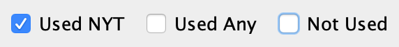
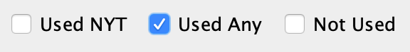
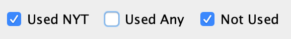
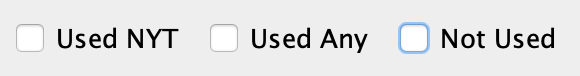
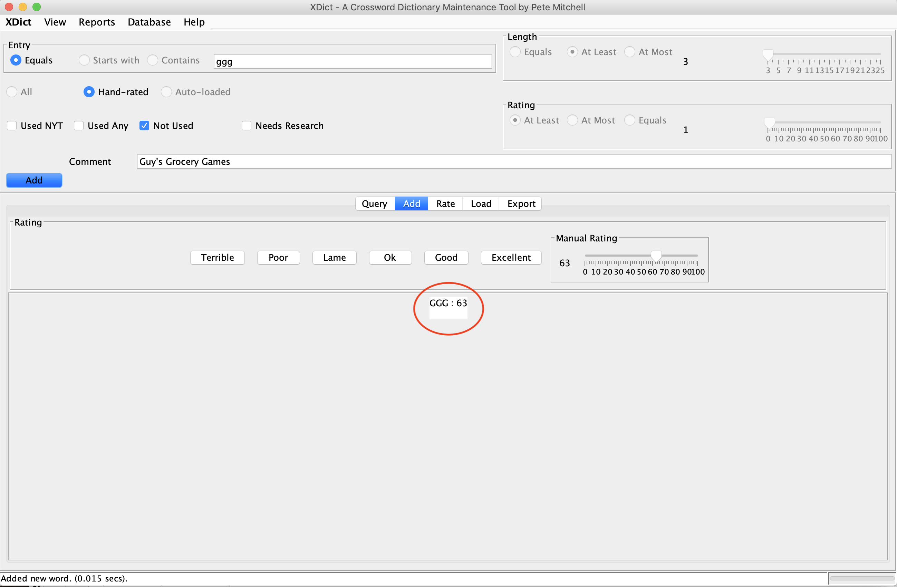

- Supports entries between 3 and 25 letters long
- Full-featured query, including "wildcard" letters
- Quick-and-easy method of manually rating
- Adjusted rating algorithm based on word length1
- Load rated or unrated word lists
- Reconcile logic handles "smart" merging of new lists into existing database
- Track which words have been manually rated
- Track words that have been used in NY Times (and other publications)2
- Add comments, for clarifications, notes, or clue suggestions
- Export word lists appropriate for Crossword Compiler or Crossfire
- Backup/restore the database to/from file
- View rating statistics, broken down by word length
- "Test" mode allows you to experiment using a test database without affecting your production dictionary
- Configuration file allows you to customize certain key behaviors
1Based on my own personal rating theory. See Rating Words for more details.
2Requires manual entry or proper setup when loading certain word lists.
- Install MySQL Database
Note:
This program uses the MySQL database. It is beyond the scope of this document to detail the download and installation of MySQL on a specific machine/OS combination. Please refer to existing online resources to install MySQL on your machine.
- Install Java Runtime
TODO:
Find out what is required and whether we need detailed instructions here. Is it different for Mac vs Windows, etc.?
- Database Setup
Datase URL: jdbc:mysql://localhost:3306/xdict
Database User: xdict
Database Password: xdict
- Installing the Software
TODO:
How are we going to do this? WAR file?
- Configuration
Before you start, copy (or rename, if you don't care to save the original) the "config.orig"
file to "config.txt". Then modify the config.txt file as desired.
Parameters in the config.txt file can be used to customize certain parameters, as follows:
- TEST_MODE: allows you to experiment with test tables without affecting your actual DB
- APP_WIDTH and APP_HEIGHT: allows you to tweak the default size of the app when it starts (this can be useful if the resolution of your screen causes the UI to look suboptimal)
- LOAD_FILE_DELIMITERS: allows you to specify the format of rated word lists you import
- EXPORT_FILE_DELIMITER: allows you to specify the format of your exported word list/dictionary
- Rating values, optionally broken down by 3, 4, 5, 6, and 7+ letter words. See Rating Words for more details.
Important:The config.txt file is read only once, when the program starts. Changes to the config.txt file will not take effect unless the program is restarted.
- Running the Program
TODO:
Need detailed instructions here.
- Menu Bar Commands

Certain actions can be done from the menu commands. They are as follows:
- XDict Menu: About this software.
- View Menu: Reset parameters to the default for the selected action.
- Reports Menu: View rating progress and breakdown reports.
- Database Menu: View table info; backup, restore, and delete tables.
- Help Menu: View this documentation.
- Metadata Parameter Settings
These settings are used to query on or set various metadata parameters. Not all parameters are applicable in certain modes. How each is used in each mode is discussed in detail in the appropriate sections.
- Action Buttons
Each action mode has different action buttons associated with it. The default action (which occurs if you just hit the Enter key) at any given time is the button that is colored blue.
- Action Mode Tabs
The Action Mode Tabs control the type of major action you are doing. Each action will set certain default parameter values, based on how one is most likely to use that mode. See the sections on each action for details. The action modes are:
- Query: Find entries in your database based on specific criteria.
- Add: Manually add, modify, and/or rate single entries to your database.
- Rate: Rate lists of words quickly, using preset buttons.
- Load: Load rated or unrated word lists into your database.
- Export: Create dictionary files to use with your constructing software.
- Display Area
The display area is where query results and other messages are shown, and where the rating takes place. It becomes a scrollable region when necessary.
- Status Bar
The status bar shows the progress and status of actions.
- Querying the Database
The Query tab provides a robust query interface to view your database. All of the metadata parameters can be used to constrain the query, with the exception of "Comments". There is no current mechanism to query based on the contents of the Comments field.
For large queries, be aware that the system only returns up to 1000 entries per request. For queries that have more than 1000 entries in the result set, use the "Next" button (which will become the default action) to view the next 1000 entries. You can continue using the "Next" action until the result set is empty. Note that your progress through the list is displayed in the status bar.
- Entry Control
The Entry control allows you to constrain the result to match a particular pattern of letters. You can specify whether you want the pattern to exactly match (Equals), match the beginning of (Starts with), or match anywhere in (Contains) an entry in your database.
Note that, while database entries are all stored in upper case, the entry field is not case-sensitive.
Tip:The entry field will accept '?' or '_' characters as single-character wildcards. For example, an Equals query on "a?t?d" (or "a_t_d") might match ACTED, ANTED, or APTED.
Tip:Any query for an exact entry string (an "Equals" search of at least one character with no wildcards) will search for that string ignoring any other parameters that may be set. This is because when you just want to know whether a word is or is not in your database, you don't want to have to guess what the other parameters might or might not be.
- Length Control
The Length control allows you to constrain the result to match a particular length, a minimum length, or a maximum length. The default is "at least 3", which returns all lengths (since the database does not store entries less than 3-letters long). Other examples: "At most 15" would show entries between 3- and 15-letters long, while "Equals 7" would show only entries that are exactly 7-letters long.
- Rating Method Control
The Rating Method control allows you to select just manually-rated words, just auto-loaded words, or both. Auto-loaded words are words that were loaded from a rated or unrated word list, while manually-rated words are words that were added or rated via the XDict program. The default query setting is "All".
Tip: You can designate a loading word list as "manually-rated", for cases where you are loading an already manicured list. See Loading Word Lists for details. - Rating Control
The Rating control allows you to select only entries that are at least, at most, or equal to a particular rating value. This is useful when looking for highly-rated words that match a particular pattern, for instance. When in the "Rating" mode, it can be used to target words that are currently highly or poorly rated. The default setting for queries is "at least 1", which displays everything except "killed" (rating = 0) words.
- Crossword Use Control

The Crossword Use control allows you to select entries based on whether they have been used in the New York Times crossword puzzle* (Used NYT) or other "major" crossword puzzles* (Used Any). The default for queries is all entries. The possible combinations are as follows (though not all are necessarily useful):
*Assuming you have captured this data -- see "Tip" below!
- All entries.
 Entries used in any puzzle.
Entries used in any puzzle.
-  Entries used in NY Times puzzle.
 Entries not used in any puzzle.
Entries not used in any puzzle.
 Entries not used in a NY Times puzzle.
Entries not used in a NY Times puzzle.
-  Entries not used in NY Times, but used in some puzzle.
- Entries used in NY Times or not at all.
- No entries.
Tip: These fields are set when you add (manually) or load word lists, so in order to use them effectively, you must make sure to set the "Used_NYT" field when importing NY Times wordlists and the "Used_Any" field when importing other crossword puzzle lists. See Loading Word Lists for details. - Needs Research Control
This field is used to select entries that you flagged as "Research" during the rating process. Note that this constraint is in addition to any other fields that are set, so to get a complete list of entries that need to be researched, use the "Reset Query" action in the "View" menu before querying with this field.
See The Rating Process for more on using the "Research" field.
- Comment Control
This field is not used as a selection criteria. However, any query that results in a single entry will display that entry's comment in this field (if there is one).
- Query Output Display
The query output displays the results of the query (up to 1000 entries at a time, scrollable).
The format for each entry is as follows:
WORD(LENGTH), RATING [, any] [, nyt] [, research] [,manual] [(COMMENT)]
where the fields in [] only appear if set. For example, a "bare minimum" auto-loaded entry would display as follows (just WORD(LENGTH), RATING):
whereas, an entry with all possible fields set would display like this:

indicating that the entry is flagged as having been used in puzzles, including the NY Times, that it is flagged as needing research, that it has been manually rated, and that it has a comment, which is displayed in parentheses. Note that this example is for clarity only -- it would be unusual for both "research" and "manual" to be set on the same word, though it could happen if you chose to revisit a previously rated entry.
- Entry Control
- Adding and Modifying Words

The Add tab allow you to quickly add or modify (and rate) single entries in your database. When adding a new word manually, you have no choice but to mark it "Hand-rated". Likewise, you cannot specify the length, as that will be calculated after the word is cleared of all non-alphanumeric characters and converted to uppercase. The default value for the Crossword Use control is "Not Used", as typically that is the case when adding new words manually, but you can change these values, add a comment, and select or designate a rating value (default preset is "OK"), by setting them on the screen before pressing the "Add" button.
Note that, unlike in the Rating process, pressing a rating button will not immediately cause the word to be added. The rating buttons are a convenience to set the Manual Slider based on your rating scale. No action to the database will occur until you press the "Add" button. Once the word is added, it will display the formatted word and rating in the Display Area.

Adding an entry that already exists will not fail; it will modify the existing word with the parameters specified. See "Important Tip" below.
Important Tip:It is a very good idea to first query directly for the entry to see if already exists. Doing so and then switching directly to the Add screen will preserve the Entry and Comment fields, as well as preload the appropriate Crossword Use fields. It will also preset the current rating into the Manual Rating slider of the Add screen.
If you go to the add field directly and the entry already exists, you risk overwriting existing information when the record is modified.
- Rating Words
- Overview and Theory
A lot of thought has been put into how to rate words quickly, efficiently,
and intuitively. Rating words is certainly not an exact science -- different
people have different ideas about what determines the quality of an entry.
Even one's own judgement may be inconsistent from day to day, based on mood
or interpretation of a given entry. This is especially true if one is assigning
numerical scores. As such, this software pushes the numerical values into the
background (after being preset through configuration), allowing the user (you)
to rate based entirely on your perception of the entry. It does this by offering
seven possible ratings* for each word, as follows:
- Excellent: These are marquee entries that you would go out of your way to use.
- Good: These are solid words and phrases that you would be happy to use.
- OK: These are common words and phrases that may lack pizzazz, but there's nothing wrong with them.
- Lame: These are words and phrases that you know you'll need, but want to minimize. I include most abbreviations, foreign words, and fill-in-the-blank partials in this category.
- Poor: These are obscure entries that you would normally avoid, but could resort to in a pinch.
- Terrible: These are actual words or phrases that you would probably never want to use. I include super-scientific terms, obscure variations, and profanity in this category.
- Kill: This is used for non-words. Sometimes a sequence of letters shows up in a word list from a rebus, a backwards entry, or some other quirky puzzle that was not filtered out. Killing it gives it a 0 value.
*The rating values can vary by word length; see below. You can also rate a word manually, if you need more granularity for a given word.
My theory on word length:
I don't think it's a stretch to say that long entries carry a puzzle. That is not to say that shorter entries are unimportant; they certainly matter. But the long entries are the ones that your solvers (and editors) are going to notice. Put another way, good long entries are better than good short entries, and bad long entries are worse than bad short entries. There is not a 3-letter entry in existence that is so good that it can make up for a bad long entry. It is not a huge exaggeration to say that almost any 3-letter entry could be justified in a pinch. To put it in mathematical terms, the standard deviation for long entries should, in my opinion, be considerably larger than for short entries.
This is why this software allows for the configuration of separate rating values for entries that are 3, 4, 5, and 6 letters long. You do not have to subscribe to this theory in full, or at all, but you should think about what you want these values to be before you start any serious manual rating. Note that any config value that is left commented out will default to the non-length-specific value.
- The Rating Process
The query parameters for the Rate action work exactly the same as with the Query action, with the exception that the default value for the Rating Method is "Auto-loaded". This is because you are typically wanting to rate entries that have not yet been manually rated.
Also, whereas a regular query returns up to 1000 entries at a time, a rating query is limited to 20 entries per request. This is because rating 1000 entries at once would be a bit overwhelming, so breaking it into 20-entry "chunks" is more conducive to rating several of those chunks in a single sitting. Also, 20 entries are easily displayed without the need to scroll.
Tip:Manually rating all your words can seem like an impossible task. My advice, as a constructor, is to start small (literally). 3-letter words are the most common, so start there. Then do 4-letter words. This can be a task that you can perform whenever you have a little free time. Got 5 minutes? Rate 100 words.
When a rate query has returned (up to) 20 results, they will be displayed in the Display Area (along with their current, auto-loaded rating). At this point, you can rate them one by one using the rating buttons. As you rate each one, it will disappear from the top of the list and the next entry will move up. This allows very quick rating, as you need only hit a single button per word.
Tip:You can add a comment to a word during the rating process. Simply type the comment in the "Comments" field before selecting the appropriate rating button.
The following screen shot is a sample result of a rating query for unrated words that have been in a NY Times puzzle and start with the string "TEST". Note in the status bar that the query has returned the first 20 of a total of 52 entries that meet this criteria.
If, for whatever reason, you feel like you need more granularity than the rating buttons are providing, you can set any value (from 0 to 100) using the Manual Rating slider and assign it with the "Manual" button.
- Research and Skip
For any entry during the rating process, you can choose to skip it for now. In this
case, you just move on to the next word while making no changes to the skipped word.
Both the "Skip" and "Research" buttons skip the current word; the difference between the
two is that the "Research" button also flags the entry as needing research. This can be
especially useful if you are rating offline (like on an airplane) or are just focusing on
quick and easy ratings and want to come back to certain words when you have more time and
opportunity to look them up.
Words that are flagged for research will be cleared of that flag once they are manually rated.
Tip:Here's another tip. When you're filling a themed puzzle, there will be many spots where the fill choice is constrained by the theme entries (typically, down entries crossing the long theme entries). Use the pattern-matching feature to manually rate those patterns before trying to fill the grid. In this way, your rating activity is specifically targeted to the puzzle(s) you are working on, so you get immediate benefit.
I typically do this multiple times throughout my fill process: rate words, export to file, import new dictionary, continue filling. Rinse and repeat.
- Overview and Theory
A lot of thought has been put into how to rate words quickly, efficiently,
and intuitively. Rating words is certainly not an exact science -- different
people have different ideas about what determines the quality of an entry.
Even one's own judgement may be inconsistent from day to day, based on mood
or interpretation of a given entry. This is especially true if one is assigning
numerical scores. As such, this software pushes the numerical values into the
background (after being preset through configuration), allowing the user (you)
to rate based entirely on your perception of the entry. It does this by offering
seven possible ratings* for each word, as follows:
- Loading Word Lists
One of the great features of this program is that is can load word lists into your dictionary
without overwriting words and data that you have already curated. See
Understand the Reconciler for details about how this works.IMPORTANT:
It is HIGHLY recommended that you backup your database before loading a wordlist. By backing up first, if the merge goes awry (perhaps you had the wrong parameters set, for example) you can clear the tables, restore to your backup file, and try again.
The default Rating Method value for the Load screen is "Auto-loaded", as you are loading a file of (typically) uncurated words. You can change this to "Hand-rated" if you are loading an already manicured and rated list, but be certain that's what you want to do before proceeding as all the words in the list will be flagged as "Hand-rated" and treated as such during the merge (see Understand the Reconciler for more about this).
The default value for Crossword Use is "Not Used". If you are loading a NY Times puzzle wordlist, then select "Used NYT" so all incoming words will be flagged appropriately. Similarly, if you are loading a multi-puzzle wordlist, select "Used Any" to flag incoming entries as being used in some puzzle.
Note: Selecting "Used NYT" implies "Used Any", since the NY Times is a subset of all puzzles, so selecting "Used NYT" forces "Used Any" to also be selected. Conversely, deselecting "UsedAny" will also deselect "Used NYT", since again you cannot specify "NYT" without also specifying "Any".
Tip:It is up to you how you want to flag your wordlists. The web site Cruciverb.com is a fantastic resource for constructors and includes, as part of its "Gold" membership, access to the puzzle database and two current wordlists: "nyt.txt" (NY Times Puzzles) and "all.txt" (NY Times and other major puzzles, including LA Times, Washington Post, Boston Globe, Wall Street Journal, CrosSynergy Syndicate, etc.). I use "Used NYT" when loading nyt.txt and "Used Any" when loading "all.txt".
The Rating slider is used to specify the default rating of any unrated words that are being loaded. This applies to all words if the list is unrated, but also applies to any unrated words found while processing a rated word list.
Tip:Just because a word has been used in the New York Times or other puzzle, does not necessarily make it a good word or desirable. Many times a puzzle is accepted based on its overall quality that may have an entry or two that frankly isn't that good but is let slide.
Similarly, just because a word or phrase has NOT appeared in a puzzle, doesn't mean it isn't desirable. Part of making good crosswords is finding those quality words and phrases that haven't been used yet.
To load a word list, specify the path and file name of the word list (relative to where the XDict program is running), make sure the parameters are set the way you want them (including the default rating value) and press the "Load" action button.
- Unranked Word Lists
Unranked word lists are simply lists of words and phrases, one entry per line. It
makes no difference whether the lists are in upper-, lower-, or mixed-case, nor whether
they include punctuation marks (see Important Note, below). All entries, when loaded, will be stripped
of non-alphanumeric characters and converted to all uppercase.
New entries (those that do not already exist in your database at the time of loading the wordlist) will be assigned the value set in the Rating slider on the Load screen. Duplicate entries will be merged based on the rules described in the Understanding the Reconciler section.
Important Note:Alphanumeric characters include the letters A to Z and the numerals 0 to 9. Please note that the load process will not attempt to convert accented or otherwise diacritically marked letters to their stripped form. These characters, and any other Unicode or non-ASCII alphanumerics, will be considered punctuation and stripped out. If you intend to load a word list that has these characters, you will need to make any letter conversions manually before you load the list.
- Ranked Word Lists
Ranked word lists are lists of words and values, with the word and value separated (typically)
by a ":" or ";". Note that you can add or change separator values using the LOAD_FILE_DELIMITERS
in the config.txt file. See Configuration (or the comments in the
config.txt file itself) for details.
As with unranked word lists, all entries, when loaded, will be stripped of non-alphanumeric characters and converted to all uppercase. Again, see "Important Note" in Unranked Word Lists, above.
New entries (those that do not already exist in your database at the time of loading the wordlist) will be assigned the value set in the word list (if it exists) else it will default to the value of the Rating slider on the Load screen. Duplicate entries will be merged based on the rules described in the Understanding the Reconciler section.
- Understanding the Reconciler
- Unranked Word Lists
Unranked word lists are simply lists of words and phrases, one entry per line. It
makes no difference whether the lists are in upper-, lower-, or mixed-case, nor whether
they include punctuation marks (see Important Note, below). All entries, when loaded, will be stripped
of non-alphanumeric characters and converted to all uppercase.
- Exporting Word Lists